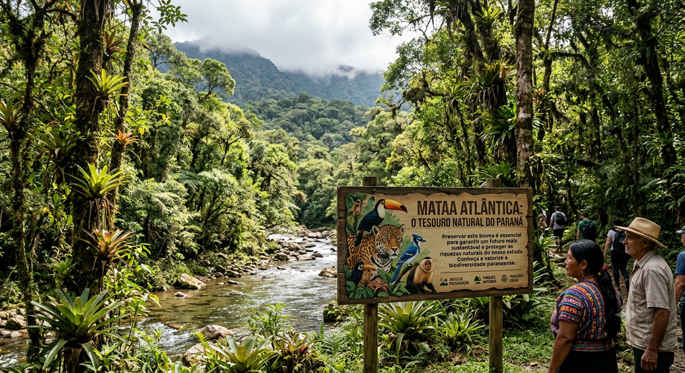
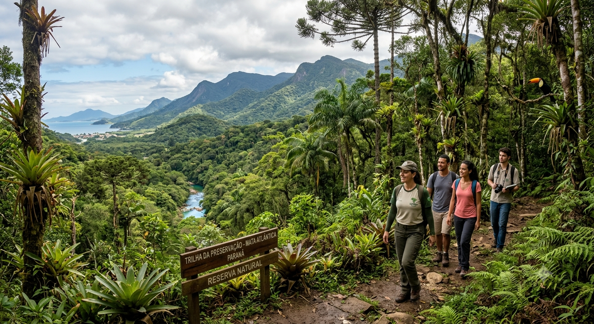

Mata Atlântica: O Tesouro Natural do Paraná
O objetivo do site é apresentar a importância desse bioma, mostrando suas paisagens, plantas, animais e os principais desafios enfrentados para sua conservação. No site serão mostradas informações sobre a Mata Atlântica paranaense, sua biodiversidade, áreas de preservação, parques, problemas ambientais e atitudes que podem ajudar na proteção da natureza. Também serão apresentados exemplos de lugares do Paraná onde a Mata Atlântica ainda está presente. O que está sendo estudado é a relação entre a natureza, a preservação ambiental e a sociedade paranaense. A Mata Atlântica faz parte da história e da identidade do estado, influenciando a maneira como as pessoas vivem, trabalham e se relacionam com o ambiente. Esse assunto também está ligado à arte e à cultura do Paraná, pois as paisagens, florestas, animais e plantas servem de inspiração para pinturas, fotografias, músicas, artesanatos e outras manifestações culturais. Além disso, a natureza está presente nas tradições e no patrimônio cultural de diferentes comunidades paranaenses. Dessa forma, preservar a Mata Atlântica significa não apenas proteger a biodiversidade, mas também valorizar a arte, a cultura e a identidade do Paraná.
A História da Mata Atlântica no Paraná: Natureza, Cultura e Preservação
A Mata Atlântica faz parte da história do Paraná e sofreu grande exploração desde a chegada dos portugueses, principalmente com a retirada de madeira, agricultura e crescimento das cidades. A partir do século XX, surgiram movimentos e organizações para proteger o bioma. A criação de parques e áreas de preservação ajudou a conservar as florestas. Atualmente, órgãos ambientais, pesquisadores e comunidades trabalham para preservar a Mata Atlântica, sua biodiversidade e sua importância para a cultura do Paraná.

A Importância Artística e Cultural da Mata Atlântica no Paraná
A Mata Atlântica é importante para a arte e a cultura paranaense porque faz parte da paisagem e da identidade do Paraná. Ela inspira pinturas, fotografias, músicas, literatura e artesanato, principalmente por meio de elementos como a araucária, os animais e as paisagens naturais.Artistas como **Alfredo Andersen, João Turin e Guido Viaro** ajudaram a representar a natureza e a cultura do estado. Atualmente, esse tema pode ser encontrado em museus, exposições, parques, escolas e projetos de preservação ambiental. Assim, valorizar a Mata Atlântica é também preservar a história, a arte e a identidade cultural paranaense.
